Новини
Какво се случва в училището.
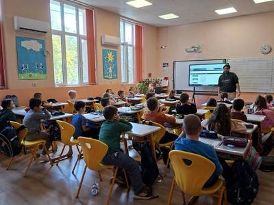
Първокласници откриха магията на програмирането по време на Европейската седмица на кодирането!
Може ли едно житно зрънце да ни отведе в света на програмирането? Разбира се! Нашите първокласници доказаха, че когато любопитството срещне въображението, ученето се превръща във вълнуващо…
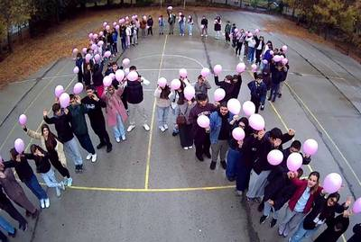
Почит към нашия патрон
Днешният неучебен, но присъствен 26 октомври, учениците от СУ „Димитър Маринов“ Лом посветиха на различни дейности. По нов стил, на днешната дата отбелязахме 1 80 години от рождението на нашия патрон…
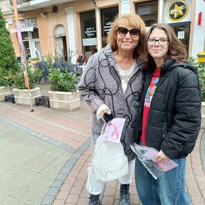
Посланици на надеждата
🌸 Октомври в розово: Ученици от СУ „Димитър Маринов“ вдъхновяват и информират в борбата срещу рака на гърдата! 🌸 През месец октомври – Световния месец за борба с рака на гърдата – нашето училище…
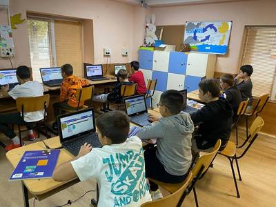
Да научим за роботите в СУ „Димитър Маринов“ Лом
От 10 до 25 октомври 2026 година в нашето училище се проведоха дейности с ученици от 3. А, 4. А, 4. Б, 5. А и 7. А клас, свързани с е вропейската седмица на програмирането, (EU Code Week) , която…
Интердисциплинарен урок по история и изобразително изкуство
К ак са изразявали своите вярвания праисторическите хора и как са създавали боите, с които са оставили следи за поколенията? На тези въпроси потърсиха отговор учениците по време на интердисциплинарен…
🎨 Изкуство, традиции и цветове в часовете по изобразително изкуство!
В един творчески и вдъхновяващ час учениците от 8 клас под ръководството на учител Мария Крумова се запознаха с техниката на яйчената темпера , сами създадоха боите и рисуваха с тях, откривайки…
Учене чрез споделяне – приемственост и творчество
Ученици от XI клас, изучаващи Учебна практика „Рисунка, типаж“, с ръководител Екатерина Цветанова , и XII клас, изучаващи Учебна практика „Анимация“, с ръководител Мария Крумова , се включиха в…
Споделяне на добри практики в 6. А клас
На 13. и 19. октомври 2026 г., в часа по Технологии и предприемачество с 6. А клас в СУ „Димитър Маринов“ град Лом , учителят Весеслава Велкова покани инж. Борислав Чакъров – магистър по…
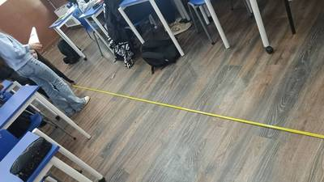
Физиката около нас: Как деветокласниците свързаха теорията с реалния живот чрез прецизни измервания
На 8 и 9 октомври 2026 г. учениците от 9. А клас, под менторството на учителя инж. Борислав Чакъров , проведоха самостоятелно практическо лабораторно упражнение на тема „Провеждане на физично…
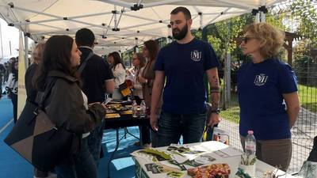
Нашите ученици – с поглед към бъдещето!
На 7 октомври 2026 г. ученици от Х, ХI и ХII клас на СУ „Димитър Маринов“ – гр. Лом , взеха участие в представянето на университетите в България, проведено в Младежки център – гр. Монтана. Събитието…
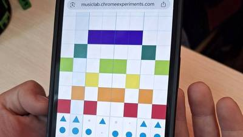
Музика, технологии и творчество в час!
🎶 В час по музика петокласниците използваха Chrome Music Lab , за да създадат свои мелодии и ритми. Чрез интерактивната платформа те експериментираха със звуците и откриха нов, забавен начин да…
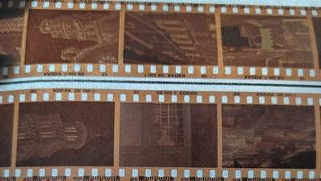
Учене чрез споделяне – приемственост и творчество
Фотография и живопис – среща на два визуални свята В часовете по Визуални изкуства – фотография с преподавател Верислава Михайлова и Учебна практика – Живопис с преподавател Екатерина Цветанова , се…
Учене чрез споделяне – приемственост и творчество – II
Тази седмица учениците от XII клас на СУ „Димитър Маринов“ град Лом с ръководител Екатерина Цветанова се включиха в обучение в друга физическа среда на тема: „Изкуство, театър и книга“ , което ги…
Учене чрез споделяне – приемственост и творчество в СУ „Димитър Маринов“ Лом
По случай откриването на новата учебна година на третия етаж в сградата на ПГ „Найден Геров“ е представена изложба от ученически творби, подбрани и аранжирани от Екатерина Цветанова, учител…
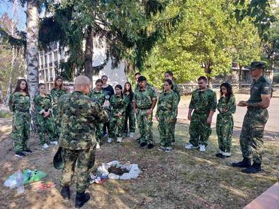
Гордеем се с нашите ученици!
В периода 3 – 8 август 9 ученици от гимназиален етап на СУ „Димитър Маринов“, град Лом, взеха участие в национален форум за обучение и представяне на добри практики по Национална програма „Изучаване…
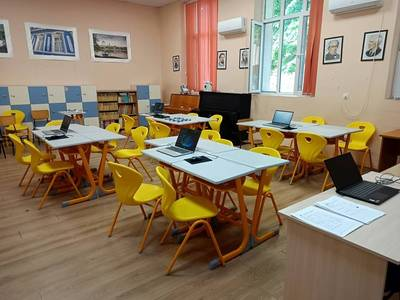
Проект: Процедура BG-RRP-1.015 – „Училищна STEM среда“
Основна цел на процедурата е осигуряване на физическата среда и техническото оборудване и обзавеждане на STEM пространства в училищното образование с оглед създаване на интегрирана учебна среда от…
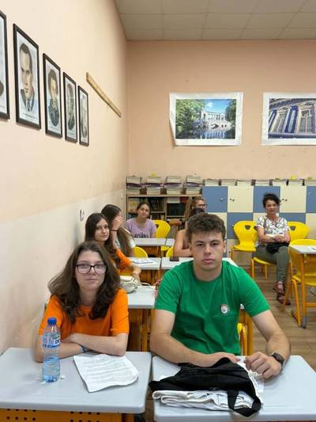
Междуинституционален мост за модерно професионално образование
СУ „Димитър Маринов“ – гр. Лом отново доказа, че когато знанието, партньорството и иновациите вървят ръка за ръка, се раждат вдъхновяващи резултати. Имахме честта да бъдем домакини на мащабна…
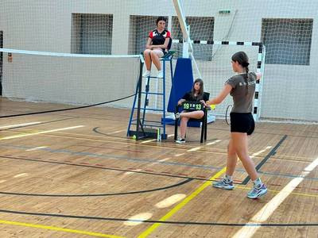
Спортен триумф в зала „БАЛКАНИАДА“!
СУ „Димитър Маринов“ град Лом излъчи своите шампиони по бадминтон! Вътрешният турнир по бадминтон на СУ „Димитър Маринов“ град Лом се превърна в истински празник за цялата училищна общност! На 29 и…
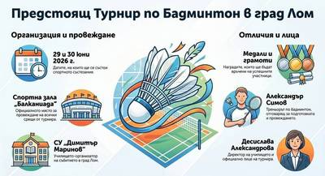
Предстоящ турнир по бадминтон
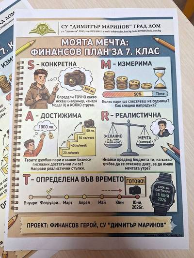
Нашите седмокласници: от ученици до финансови герои!
На 18 юни 2026 г. в СУ „Димитър Маринов“ – град Лом се проведе вълнуващият и дългоочакван „Финансов панаир“ , който увенча финала по Националната программа „Умения на фокус“ (Модул 2 „Финансова…
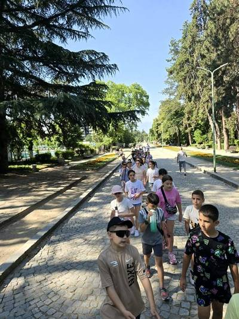
Мисия изпълнена: ученици от СУ „Димитър Маринов“ – Лом избраха приключението, движението и здравето в Сандански
Спортни предизвикателства, отборни игри и разходка с водни колела в парк „Свети Врач“ превърнаха лагера в Сандански в истински урок по активен начин на живот. Учениците от СУ „Димитър Маринов“ – Лом…
Поздравления за Никола Павлов от IX „а“ клас!!!
Една новина, която ни остави без думи от вълнение и изпълва сърцата ни с гордост! Поздравления за Никола Павлов от IX „а“ клас!!! Прекрасна и вдъхновяваща новина за целия ни град е успехът на Никола…
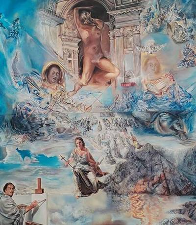
Смесено обучение по проект „Модернизиране на професионалното образование и обучение“
На 12 юни 2026 г. гимназистите от X и XI клас на СУ „Димитър Маринов“ Лом , професия „Графичен дизайнер“ проведоха смесено обучение (съчетаване на ученето в училището и ученето в друга физическа…
График и място за запознаване на зрелостниците с писмената работа от държавния зрелостен изпит, проведен през сесия май-юни 2026 г.
1. Място за запознаване с оценената индивидуална работа на ученик, явил се на ДЗИ, както следва: СУ „Димитър Маринов“ – Лом, кабинет на директора. Длъжностно лице – г-жа Валентина Иванова,…
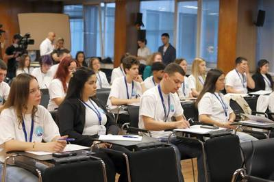
Среща на Съвета на децата към Председателя на Държавната агенция за закрила на детето
През периода 27 – 29 май 2026 г. ученичката от Х „а“ клас на СУ „Димитър Маринов“ град Лом Диляна Георгиева, която е един от представителите на област Монтана в Съвета на децата към Председателя на…
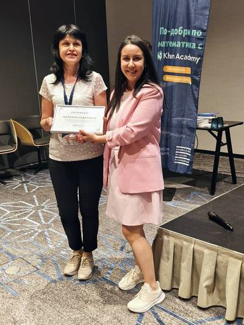
Годишната конференция на Сдружение „Образование без раници“
На 30 май екип от СУ „Димитър Маринов“ град Лом в състав г-жа Марияна Габровска , главен учител в начален етап, г-жа Красимира Петкова , старши учител по математика и г-жа Десислава Александрова,…
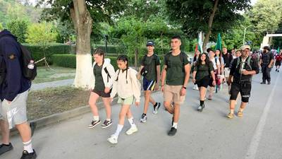
НТП „Козлодуй – Околчица“
За поредна година група ученици от СУ „Димитър Маринов“, град Лом , под ръководството на г-н Анатоли Антонов , учител по ФВС, се включи в Национален туристически поход „По пътя на Ботевата чета –…
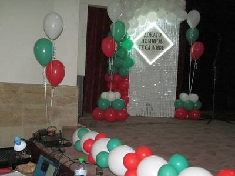
„Докато помним – те са живи“ – празничен концерт в чест на Българската армия
С тържествен концерт на 26 май 2026 г. под надслов „Докато помним – те са живи“ ученици, учители и гости отдадоха почит към героизма, честта и саможертвата на българските воини. Събитието се…
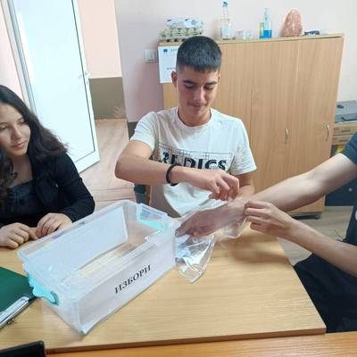
Ден на ученическото самоуправление
✨През м. май по традиция в СУ „Димитър Маринов“ провеждаме Ден на ученическото самоуправление. Тази година освен разменени роли, имаше и избор на председател на Училищния ученически съвет. 👫 В…
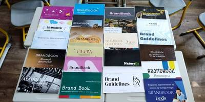
Приключи производствената практика на учениците от XII клас
Приключи производствената практика на учениците от XII клас – период, изпълнен с вдъхновение, творчество, търпение и прецизност. Зрелостниците създадоха своите брандбукове на хартиен носител, като…
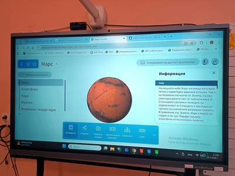
Междуинституционална среща в СУ „Димитър Маринов“
🎯 На 12 май 2026 г. СУ „Димитър Маринов“ град Лом бе домакин на междуинституционална среща за представяне на добри училищни и педагогически практики за повишаване на образователните резултати на…
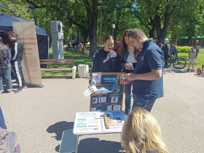
Панорама на средното образование 2026
📢 На 13 май в парк „Монтанезиум“ град Монтана се проведе Панорама на средното образование , в която със свой щанд участва и нашето училище. СУ „Димитър Маринов“ град Лом беше представено от инж.…
Резултати от регионалния ученически конкурс „Истории за чест и саможертва“
Резултати от проведения Регионален ученически конкурс по история и цивилизации „Истории за чест и саможертва“ : – Протокол за класиране на ученици в категория „Рисунка“ – Протокол за класиране на…
! ИНФОРМАЦИОННО СЪОБЩЕНИЕ ЗА УЧЕНИЦИТЕ, КОИТО ЗАВЪРШВАТ XII КЛАС !
До 25 август абитуриентите, които не са започнали работа, трябва да декларират и платят сами здравните си вноски за юли 2026 година . За целта е необходимо те да: Подадат в НАП Декларация образец 7 –…
Награди за наши ученици от „Книговище“
🏵️Имаме удоволствието да Ви съобщим, че платформата “Книговище” има награди за наши ученици! 📖В петото издание на надпреварата „Априлско състезание по четене с разбиране“ поощрителна награда печели…
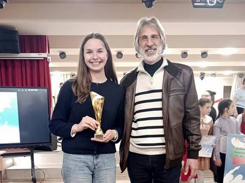
Призово място и в Добрич
XII Национална ученическа конференция по гражданско образование „Семейство – училище – общество“. Престижният форум е организиран от СУ „Свети Климент Охридски“ – гр. Добрич и е част от Националния…
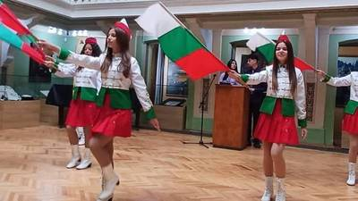
Призово място в категория „Филм“
Диляна Георгиева от Х „а“ клас завоюва призовото първо място в категория „Филм“ на Втората ученическа конференция по история и цивилизации и философия „Те се сражаваха за Родината 1878-1945“ ,…
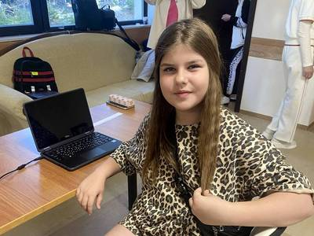
Национално състезание „ИТ Знайко“
Вече 16 години ученици от СУ „Димитър Маринов“ гр. Лом участват в Национално състезание „ИТ Знайко“ , организирано от СНЦ „Образование и технологии“. По традиция винаги има класирани за заключителния…
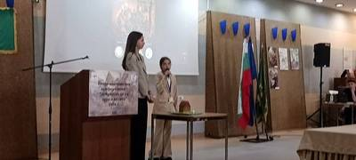
Втората ученическа конференция по история и цивилизации
📜На 24–25 април се проведе Втората ученическа конференция по история и цивилизации „Добродетели на духа и волята“ , организирана от 33. ЕГ „Св. София“ и НЧ „Г. С. Раковски“ – гр. София. Форумът бе…
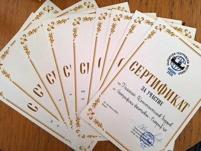
Географски дебют във Видин за учениците от СУ „Димитър Маринов“
🌍 XI издание на Българския географски фестивал превърна град Видин в истинска столица на знанието. За първи път представители на 10.а и 7.б клас се потопиха в магията на този празник на науката.…
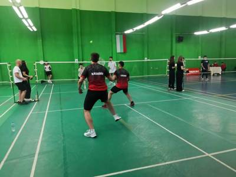
Финали по Бадминтон ꞌ2026
На Републиканските финали по бадминтон в град Хасково , проведени от 23 до 26 април 2026 г. отборът на юношите 11-12 клас на СУ „Димитър Маринов“ град Лом: Ивайло Асенов, Цветослав Цветанов, Николай…
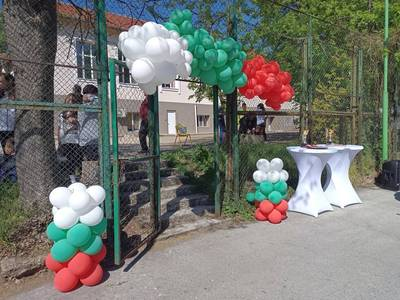
Областен кръг на Националното състезание по БДП
На 25 април 2026 г. СУ „Димитър Маринов“ град Лом беше домакин на Областен кръг на Националното състезание по безопасност на движението по пътищата . В състезанието участваха седем отбора в Първа…
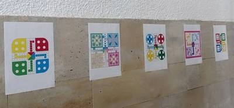
Учене чрез споделяне – приемственост и творчество
Тази седмица учениците от 11 клас , под ръководството на учител Екатерина Цветанова (изобразително изкуство) влязоха в ролята на галеристи и реализираха изложба в коридора на третия етаж на…
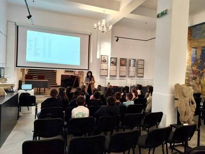
Урок по родолюбие, сърце и памет в четвърти клас
Днес четвъртокласниците преживяха един урок, който няма да забравят – урок по родолюбие, сърце и памет. Отбелязването на 150 години от избухването на Априлското въстание започна с поднасяне на цветя…
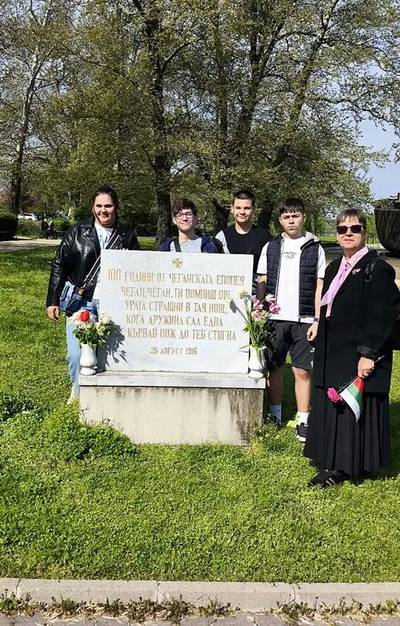
Гордост и памет: 150 години от Априлското въстание
Днес учениците от 7.а и 7.б клас се поклониха пред подвига на героите, дали живота си за свободата на България! По повод знаменателната 150-а годишнина от избухването на Априлското въстание, нашите…
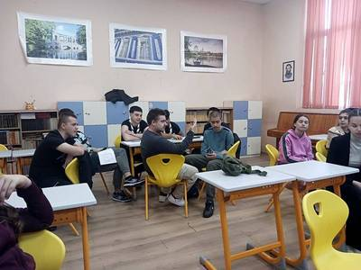
Ученици от IX и Х клас с дебат: Априлското въстание – успех или трагедия?
Ученици от IX и Х клас под ръководството на Аделина Димитрова и с участието на Вася Александрова отбелязаха 150-годишнината от Априлското въстание с дебат: Априлското въстание – успех или трагедия? С…
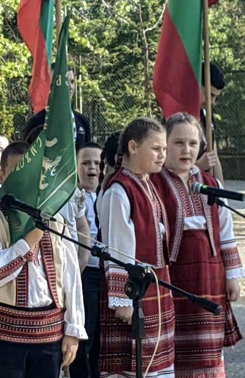
България отбелязва 150 г. от избухването на Априлското въстание
Днес България отбелязва 150 г. от избухването на Априлското въстание през 1876 г. Тази славна страница от българската история беше отбелязана от учениците на СУ „Димитър Маринов“ град Лом с различни…
Кратки съобщения
Програма за 26.10.2026 г.
Програма за заниманията на 26.10.2026
Свободни места към 23.10.2026 г.
Свободни места в паралелките към дата 23.10.2026
Свободни места към 09.10.2026 г.
Свободни места в паралелките към дата 09.10.2026
Свободни места към 01.10.2026 г.
Свободни места в паралелките към дата 01.10.2026
Покана
Покана за откриване на учебната 2026-2027 година в СУ „Димитър Маринов“ –
Свободни места към 11.09.2026 г.
Свободни места в паралелките към дата 11.09.2026
Свободни места към 01.09.2026 г.
Свободни места в паралелките към дата 01.09.2026
Свободни места към 17.08.2026 г.
Свободни места в паралелките към дата 17.08.2026
Покана за Обществен съвет
Покана за заседание на обществения съвет при СУ „Димитър Маринов“ гр.
Свободни места към 27.07.2026 г.
Свободни места в паралелките към дата 27.07.2026
График и място за провеждане на изпита по компонента „Говорене“, НВО, 10. клас
Графикът и мястото за провеждане на изпита по компонента „Говорене“ на НВО по чужд език – Английски език в Х клас през учебната 2025/2026 годин а е наличен в секция Изпити – НВО 10.
Заповядайте на концерта!
Съобщение за поправителен изпит по БЕЛ за 12 клас
Съобщение за график на поправителните изпити с учениците в 12. клас, дневна форма на обучение през учебната 2025/2026
По-старите новини са в архива на стария сайт.